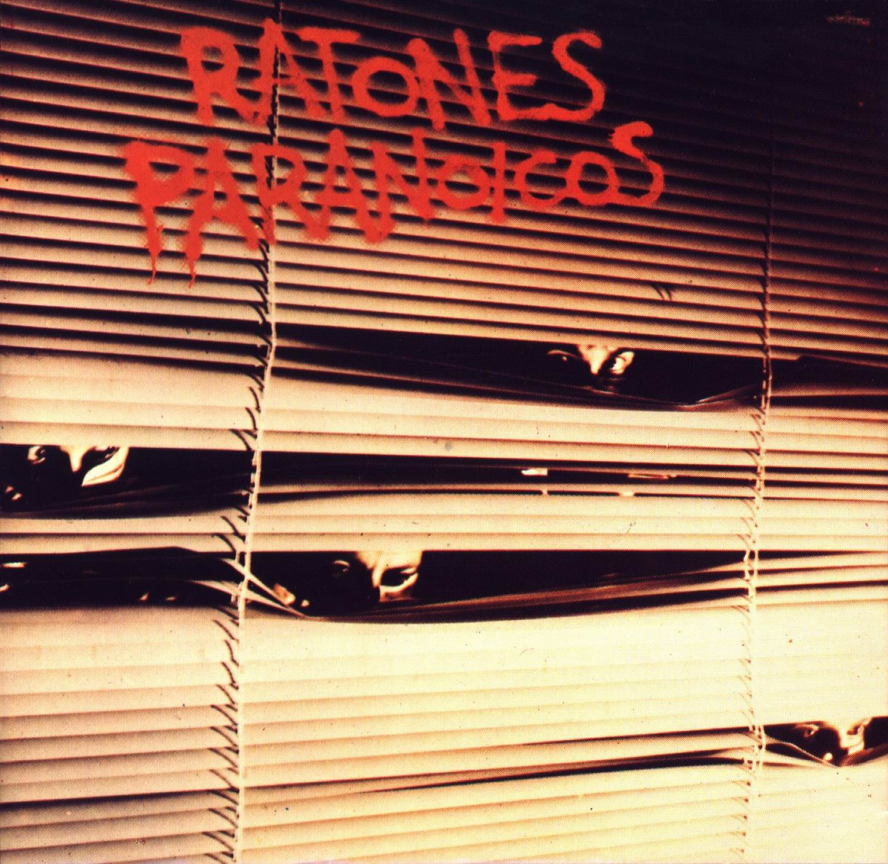
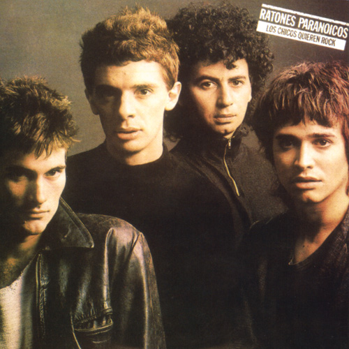
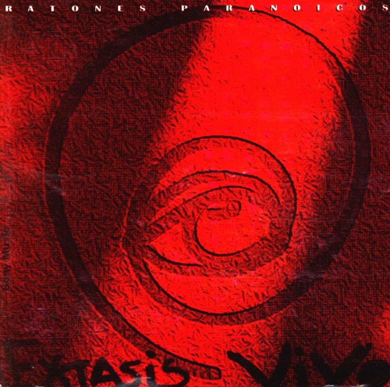

1986 Ratones Paranoicos

Ratones Paranoicos es el primer álbum de estudio de la banda de rock
argentina Los Ratones Paranoicos, editado en 1986. A pesar de su
escasa difusión, las 3000 copias vendidas de la primera edición,
significaron un gran número para la banda de Villa Devoto. El disco,
producido por Gustavo Gauvry y editado por el sello Del Cielito, se
encuentra más cercano al sonido de la escena neoyorquina de punk
rock que al rock n' roll de raíz británica con el que se los
identificará en etapas posteriores. Canciones como "Sucia Estrella",
de la cual Luis Alberto Spinetta grabó junto a Los Socios del
Desierto una versión en su disco San Cristóforo, "Descerebrado" o
"Algo me queda", se transformaron paulatinamente en hitos de su
extensa discografía. "Bailando Conmigo" incluye una máquina de ritmo
en su percusión, instrumento electrónico nunca más utilizado por la
banda hasta el día de la fecha. Existen también versiones
alternativas de muchas de las canciones de este disco, editadas en
1995, en la recopilación de outtakes y rarezas "Raros Ratones".
1988 Los Chicos quieren Rock

El título de su segundo disco, el cual los llevó a la fama, en donde
justamente buscan pregonar Rock. Este álbum no dista mucho de lo que
ya habían hecho en su disco debut. Desde este punto, sabiendo que
todas sus canciones tienen la misma fórmula, lo que queda entonces
es distinguir su nivel compositivo para deducir sus mejores
momentos. Es ahí donde encontramos algunos temas que realmente
divierten y otros que lo son en menor escala. “El Hada Violada”,
“Gran Desorden” y “Ella está de Mi Lado” son los claros ejemplos de
lo que es hacer rock barrial inmemorable. Y “Líder Algo Especial” es
un plagio a ellos mismos, tiene el mismo riff que “Movamos” de su
primer álbum, pero con menos energía. La canción “Carolina” fue el
hit más famoso del disco. “Enlace” es otro que sobresale, es un
rocker bastante dinámico que recuerda mucho a los Sex Pistols.
“Sucio Gas” es de los más recordables dentro de sus temas. Y por
último esta “Lluvia de Heroes”, muy bueno por la producción. Pese a
que se grabaron en distintos momentos, Juanse ve a sus dos primeros
discos como parte de un mismo proceso. “Se mezclan las aguas a la
hora de definir cuáles son los temas de cada uno. Por ahí la
diferencia es que en el primer disco tuvimos que adaptarnos un poco
al sonido del momento para atrapar a alguien. En el segundo, en
cambio, ya salimos con el sonido que realmente queríamos.” Y esa
diferencia se notó en el sonido un poco más opaco que tuvo el debut
respecto de Los chicos quieren rock, que –como destacó el periodista
José Bellas en el texto introductorio a un compilado especial sobre
la banda– los emparentó con grupos de esa época como Los Pillos o
Fricción, aunque –-en el caso de los Ratones– con un pulso
decididamente más callejero, más Lou Reed, más palo y a la bolsa,
que no tenían aquellos grupos. “Ya en el primer álbum dejamos en
claro que no éramos hijos de nadie”, sostiene Juanse. “Los temas
eran nuestros, el sonido era nuestro. Era la primera vez que se
escuchaba algo así. No ibas a encontrar ese sonido en ninguna parte
del mundo.”
1992 Extasis Vivo

Éxtasis Vivo es el primer álbum en vivo de la banda de rock
argentina Los Ratones Paranoicos editado en 1994. Incluye también 3
nuevas canciones de estudio : "Algo Mal", "La Calavera" y "Cerebro
Mágico".